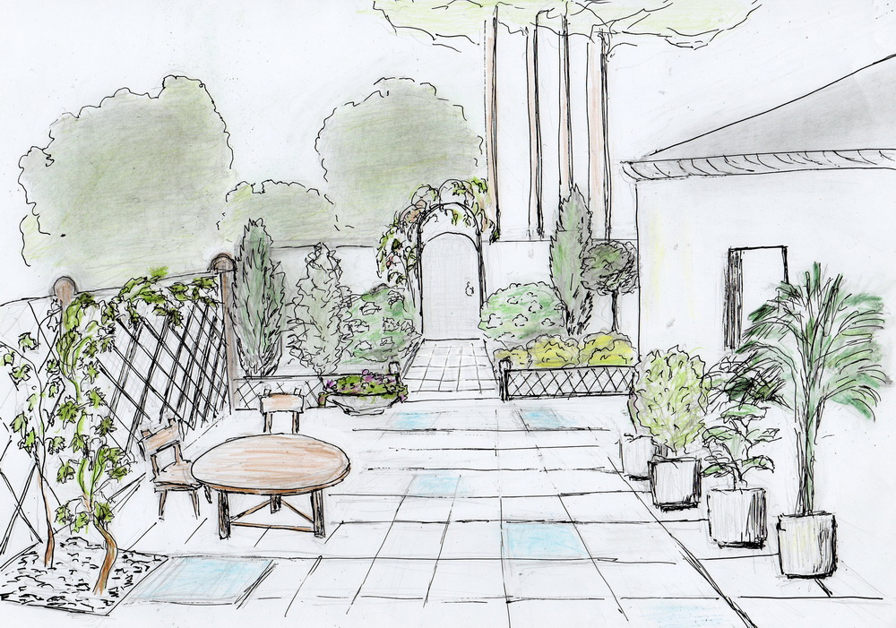
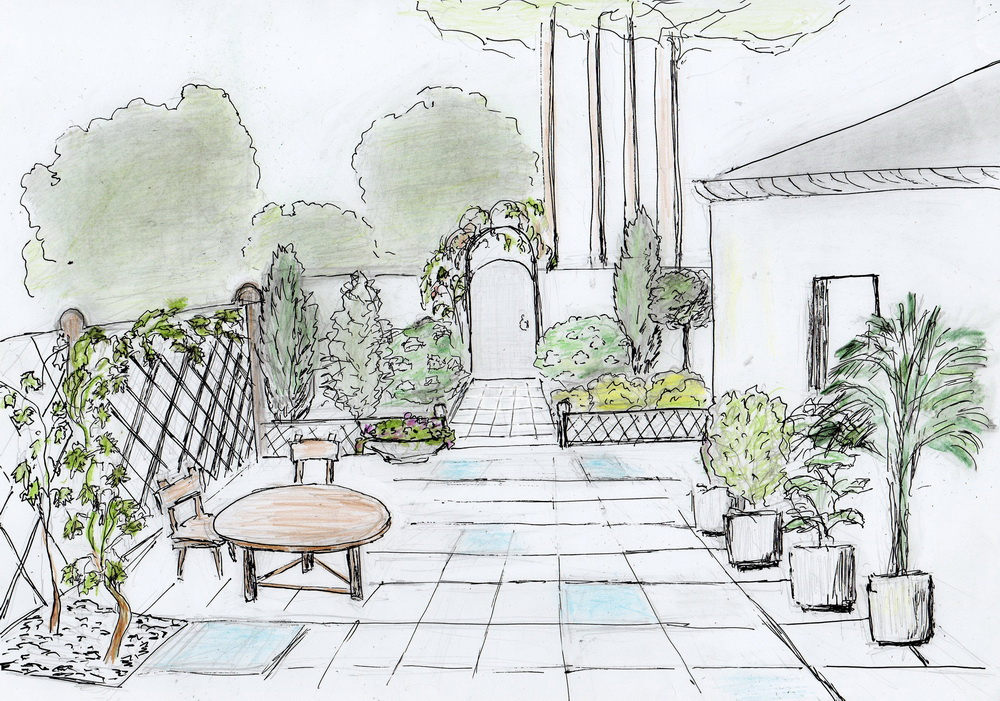

| Внутрішній дворик. Патіо |
|
Одним з напрямів ландшафтного дизайну, а точніше ландшафтної архітектури є патіо. Ця ідея оформлення внутрішнього дворика з'явилася порівняно недавно і прийшла до нас із Середземномор'я, але у Чернівцях вона набуває все більшої популярності. 
Патіо – це свого роду кімната відпочинку на свіжому повітрі, місце зустрічей для бесід або «зимовий сад» просто неба.
Патіо – це дворик або тераса, оточена стінами, або загорожами із зелених насаджень - чагарників і дерев, особливо шикарно виглядатиме патіо в оформленні із в’юнких троянд, які, навіть в нашому кліматі, цвітуть до самих морозів.
Часто, влаштувавши дворик, господар стикається з проблемою оптимального використання відносно невеликого простору. Тому перед ландшафтним архітектором постає непросте завдання, наповнити внутрішній дворик приємним і гармонійним «вмістом» – скульптурами, меблями для відпочинку, фонтанами, ставками, продумати елементи ландшафтного дизайну.
План внутрішнього дворика.
  
План майбутнього внутрішнього дворика повинен розроблятися з урахуванням кількості мешканців і побажань кожного з них. Вирішите, чи стоятимуть меблі в патіо, або він буде чимось на зразок прохідної кімнати.
Визначіться з мірою озеленення: ви згодні обмежитися газоном і декількома кущами, або дворик бачиться вам як сад в чотирьох стінах? Безумовно, одним з чинників, що визначають настрій дворика, є сам будинок, його архітектурний стиль, фактура і колір стін. Останні служать фоном, від якого дизайнер відштовхується при виборі настрою і загальної колірної гамми.
Все починається з планування.
Це має бути практично рівна поверхня, розташована в тихому куточку саду або поряд з верандою біля будинку. Головне, щоб пейзаж довкола патіо був візуально приємним. Майданчик для нього необхідно вимостити. Форма майданчика може бути всіляких геометричних форм. Вибір матеріалу під внутрішній дворик патіо величезний, зважаючи й на те, що його можна придбати, навіть, в Чернівцях. Це може бути звичайна декоративна тротуарна плитка, або дерево, природний камінь, або керамогранітна плитка. Все залежить від стилю і бюджету.
Меблі.

Для того, щоб ваш дворик перетворився на справжню кімнату просто неба, його необхідно обставити.
Перш за все, абсолютно необхідні елементи – це достатня кількість місць для сидіння і стіл. Навіть, якщо ви не плануєте приймати тут гостей, все одно бажано, щоб було куди покласти книгу, поставити келих шампанського або філіжанку кави. Довкола пластикового, скляного або дерев'яного столика можна розставити садові крісла або канапки, хоча використання природних матеріалів виглядатиме естетичніше. Можна також поставити лавку, встановити гойдалки, шезлонг, барбекю.
Освітлення.
Аксесуари.
Щоб дворик став максимально затишним, можна доповнити його інтер'єр всілякими статуетками, фігурками і тому подібне. Головне не перестаратися з аксесуарами, щоб патіо не виглядав захаращеним.
Чудово прикрашають патіо також всілякі перголи і металеві конструкції з в'юнкими рослинами. Можна, наприклад, зробити декілька “посадкових ніш”
 уздовж стіни будинку, встановити решітку і висадити рослини для вертикального озеленення – це оживить нудну стіну. Можна також встановити перголу-навіс, яка захистить від пекучого літнього сонця. |